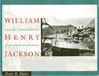

<body bgcolor="#FFFFFF" text="#000000" link="#0000FF" vlink="#CC0000" alink="#CC0000"><center><hr width="350" size="1" align="center" noshade>An examination of the work of "the world's most famous landscape photographer"<hr width="350" size="1" align="center" noshade><p><a href="https://cdcshoppingcart.uchicago.edu/Cart/ChicagoBook.aspx?ISBN=9780877224785&&PRESS=temple" target="_top">Buy this book!</a> | <a href="https://cdcshoppingcart.uchicago.edu/Cart/Cart.aspx?PRESS=temple" target="_top">View Cart</a> | <a href="https://cdcshoppingcart.uchicago.edu/Cart/Cart.aspx?PRESS=temple" target="_top">Check Out</a></p><p></p></center><!--none//--><h1>William Henry Jackson and the Transformation of the American Landscape</h1>
<h3>Peter B. Hales</h3>
<P>cloth 0-87722-478-1 $39.95, Jun 88, <FONT COLOR=#990033>Out of Print</FONT>
<br>paper 1-56639-463-5 $27.95, Jun 95, <FONT COLOR=#990033>Out of Print</FONT>
<BR> 368 pp
11x8.5
198&nbsp;halftones
</P><BLOCKQUOTE><I>"[Hales] gives us a richly detailed biography and a penetrating analysis of the artist's oeuvre...Western buffs and readers interested in photography will find this an engrossing book."</I>
<br>&#151<b><I>Publishers Weekly</I></b><I></I></BLOCKQUOTE>
<p>Acclaimed in the nineteenth century as "the world’s most famous landscape photographer," William Henry Jackson and his camera presided over the mapping, bounding, and settling of the American West and the larger American landscape. In this lavishly illustrated study, Peter B. Hales investigates the conversion of America’s landscape from myth to scenery and Jackson’s effect on this cultural transformation.
<p>In this book Peter B. Hales examines the ways Americans viewed their land, and the ways they acted on their beliefs. A study of how an individual affects and was affected by his culture, this is an engrossing story of the contradictions of American culture, the myths that encompass it and give it meaning, and their transformation over a century.
<p>William Henry Jackson himself is rich material for an authoritative study. Not simply a chronicler, he immersed himself and his photographs in the processes of change that swept America from the 1840s until the 1940s. Official photographer to the Hayden Survey of the American West, early explorer of Yellowstone, and celebrant of the Colorado Rockies, Jackson was instrumental in the mass-marketing of landscape photography at the beginning of the twentieth century. Retired in the 1920s, he was rediscovered by the American Scene enthusiasts of the thirties, and found another career as painter of nostalgic images of America’s Golden Age of frontier freedom.
<p>Illustrated with nearly two hundred reproductions of Jackson’s photographs, this work makes major contributions to our understanding of photography, of the American land, and of American culture in its broadest, richest sense.
<BR>&nbsp;<h2>Reviews</h2>
<p><I>"It is good to have such a well-documented and richly-detailed book as this about one of the most important American photographers of the Western landscape We are in Peter Hales' debt..."</I>
<br>&#151<b>Alan Trachtenberg</b>, Yale University
<p><I>"[M]uch more than another biography of the famed photographer of the American West. Hales sees Jackson's career as representative of large changes in American culture and in American perception of the rapidly changing landscapes of the late nineteenth and early twentieth centuries."</I>
<br>&#151<b><I>The Geographical Review</I></b>
<p><I>"It is hard to resist the power of William Henry Jackson's biography. Jackson was born in 1843, only four years after the invention of photography, and died in 1942. From daguerreotype to Kodachrom, Jackson's life and prolific career spanned much of photography's first century."</I>
<br>&#151<b><I>American Quarterly</I></b>
<p><I>"Well-researched and provocative examination of a photographer who engendered the 'twin myths of the radical individual and the free landscape.' Includes a chronology of his life and work and an excellent bibliographical essay. An excellent look at his work in the broader context of the changing American landscape."</I>
<br>&#151<b><I>Library Journal</I></b>
<p><I>"Hales analyzes not only Jackson’s life, photographs, and paintings, but also the way in which these are related to American culture. This work on Jackson will place Hales in the very front rank of historians of American photography, and, for that matter, American culture. It is an extremely well written and extremely important book that has magisterial comprehensiveness."</I>
<br>&#151<b>William H. Goetzmann</b>, The University of Texas at Austin
<BR>&nbsp;<h2>Contents</h2><P>
<p>Acknowledgments
<br>William Henry Jackson: A Chronology
<br>Introduction
<br>1. The Construction of Vision, 1843-1867
<br>2. Learning Landscapes, 1868-1869
<br>3. The Transportable View, 1870-1871
<br>4. Transforming the View, 1871-1878
<br>5. The Commercial Traveler, 1879-1894
<br>6. The Frontier Thesis, 1892-1894
<br>7. The Imperial Frontier, 1986-1924
<br>8. Incorporated Man, 1896-1898
<br>9. Man as Myth, 1924-1942
<br>Epilogue
<br>Notes
<br>An Essay on the Sources
<br>Index
</P><BR>&nbsp;<H2>About the Author(s)</H2>
<P><B>Peter B. Hales</B> is Professor and University Scholar in the Department of Art History at the University of Illinois, Chicago and author of several books, including <I><a href="292_reg.html" target="_top">Silver Cities: The Photography of American Urbanization, 1839-1915</a></I> (Temple).</P>
<BR><H2>Subject Categories</H2>
<p><A HREF="/tempress/american.html" TARGET="_top">American Studies</a>
<BR><A HREF="/tempress/art.html" TARGET="_top">Art and Photography</a>
</p>
<p align="center"><a href="https://cdcshoppingcart.uchicago.edu/Cart/ChicagoBook.aspx?ISBN=9780877224785&&PRESS=temple" target="_top">Buy this book!</a> | <a href="https://cdcshoppingcart.uchicago.edu/Cart/Cart.aspx?PRESS=temple" target="_top">View Cart</a> | <a href="https://cdcshoppingcart.uchicago.edu/Cart/Cart.aspx?PRESS=temple" target="_top">Check Out</a></p><p><font face="Arial" size="1"><a href="copyright.html" onMouseOver="window.status='Web Copyright Policy';return true;" onMouseOut="window.status=''" title="Web Copyright Policy">&copy;</a> 2015 <a href="http://www.temple.edu" target="new" onMouseOver="window.status='Link to Temple University home page';return true;" onMouseOut="window.status=''" title="Link to Temple University home page">Temple University</a>. All Rights Reserved. http://www.temple.edu/tempress/titles/394_reg.html</font></p>